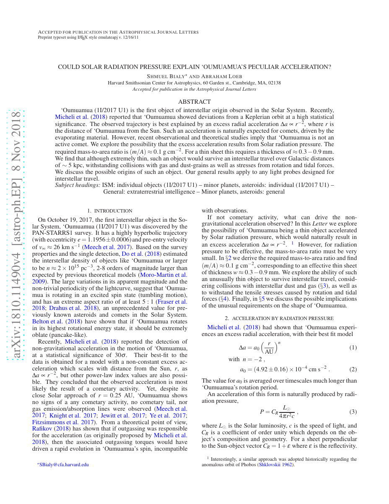
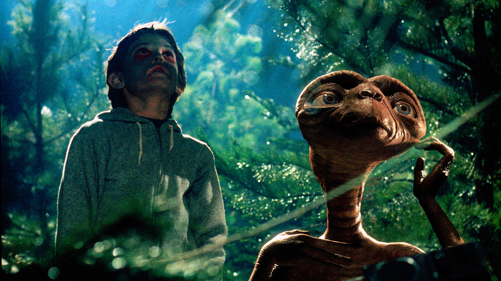

36:27 · 6 OPERE
Provare a pensare scientificamente.
Il filo del discorso
Il relatore propone una serie di esempi per distinguere un ragionamento fondato da una spiegazione soltanto suggestiva. In apertura critica sia i mezzi di comunicazione dominanti sia forme di opposizione che, a suo giudizio, alimentano la medesima confusione attraverso sensazionalismo e teorie prive di riscontri. Beccaria e un motto di Bacone introducono il valore di una educazione lenta, sostenuta dal confronto con i libri. La parte centrale affronta la vita extraterrestre, le distanze cosmiche e il caso di ‘Oumuamua: le note precisano l’ambito dell’equazione di Drake, le ipotesi ancora aperte e gli errori con cui il video descrive i risultati astronomici. Il discorso passa poi a esempi quotidiani: il campionamento di chi si trova in una coda, il confronto fra temperature, la penna spaziale e la caduta di una fetta imburrata. Il filo comune è la necessità di esplicitare assunti, grandezze e condizioni dell’esperimento. La scheda conserva l’invito a ragionare, ma controlla anche gli esempi del relatore: una critica al dogmatismo non rende esatta ogni sua affermazione. Le opinioni sulla gestione sanitaria e sui filtri facciali sono attribuite e confrontate con la documentazione tecnica, mentre i richiami a Wells, Welles ed E.T. restano distinti fra narrativa, radio e cinema.
I libri nel discorso
Dei delitti e delle pene
Copertina: Einaudi, ET Classici, 2018, a cura di Franco Venturi, ISBN 9788806239206. Copertina autentica bianca con titolo rosso e scena illustrata in nero. Prima pubblicazione del saggio nel 1764.
Immagine autentica dell’opera, controllata visivamente; l’edizione di riferimento non è attribuita al filmato.
Beccaria e Dei delitti e delle pene espliciti, con richiamo al motto iniziale attribuito a Bacone.
Passaggio 8:01 ↗ · Fonti e libro ↗
Saggi (Essays)
Identificazione probabile
Copertina: Sellerio, La memoria 356, 1996, traduzione Anna Maria Ancarani, nota Attilio Brilli, 244 pagine; ISBN 9788838910968.
Copertina specifica Sellerio Saggi di Francesco Bacone; data e ISBN verificati nel catalogo. Il rinvio a LVIII è un riscontro della parafrasi, non un titolo pronunciato nel filmato.
Bacone esplicito nel motto di Beccaria; il frontespizio del 1764 rimanda a Sermones fideles num. XLV. Identificazione probabile della raccolta, non di una edizione moderna specifica.
Passaggio 8:01 ↗ · Fonti e libro ↗
L’infinito
Copertina dei Canti che comprendono L’infinito: Feltrinelli, Universale Economica I Classici, 2016 · Canti
Copertina dei Canti di Giacomo Leopardi, Feltrinelli 2016 a cura di Ugo Dotti. Il riferimento riguarda la singola poesia L’infinito; l’immagine non rappresenta una sua pubblicazione autonoma né l’edizione citata nel video.
Leopardi e L’infinito espliciti, con reminiscenza dei versi sugli spazi e sui silenzi.
Passaggio 11:35 ↗ · Fonti e libro ↗
Could Solar Radiation Pressure Explain ‘Oumuamua’s Peculiar Acceleration?
Identificazione probabile
Prima pagina dell’articolo: Bialy e Loeb, 2018: Prima pagina integrale del preprint arXiv:1810.11490v4, 8 novembre 2018, accettato per The Astrophysical Journal Letters; non una copertina libraria.
Riproduzione integrale della prima pagina del PDF arXiv v4; autori, titolo, abstract e identificativo visibili. L’identificazione del lavoro ricordato dal relatore resta probabile: il titolo non è pronunciato.
Saggio di un astronomo di Harvard su ‘Oumuamua e sull’ipotesi artificiale, titolo e autore non pronunciati. Identificazione probabile con Bialy e Loeb 2018, con precisazione della reale accelerazione analizzata.
Passaggio 16:19 ↗ · Fonti e libro ↗
La guerra dei mondi (The War of the Worlds)
Identificazione probabile
Copertina: Feltrinelli, Universale Economica I Classici, 2023, traduzione e cura di Mirko Esposito, 288 pagine; edizione di riferimento.
Immagine autentica dell’opera, controllata visivamente; l’edizione di riferimento non è attribuita al filmato.
H.G. Wells esplicito e invasori vulnerabili ai batteri: identificazione probabile di La guerra dei mondi, titolo non pronunciato.
Passaggio 18:43 ↗ · Fonti e libro ↗
E.T. l’extra-terrestre (E.T. The Extra-Terrestrial)
Identificazione probabile
Fotografia del film: E.T. l’extra-terrestre: Fotografia ufficiale del film del 1982, Amblin; sceneggiatura di Melissa Mathison. Non è una copertina libraria.
Fotografia ufficiale con Elliott ed E.T. in un bosco, tratta dalla pagina Amblin del film. Non è la copertina di un libro né la fotografia di un oggetto extraterrestre reale.
E.T. e telefono a casa richiamati nel discorso sugli omini verdi: identificazione probabile del film, regista e titolo completo non pronunciati.
Passaggio 18:56 ↗ · Fonti e libro ↗